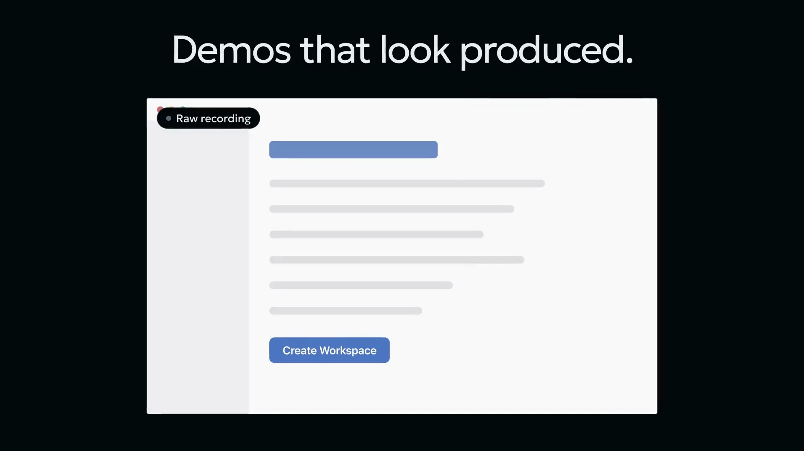
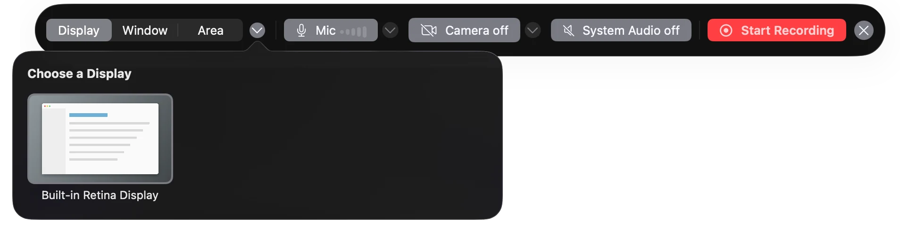
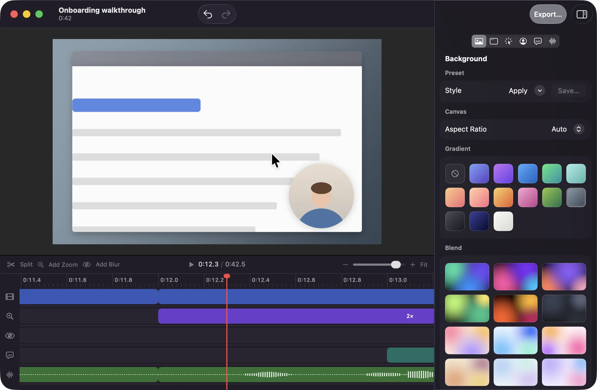
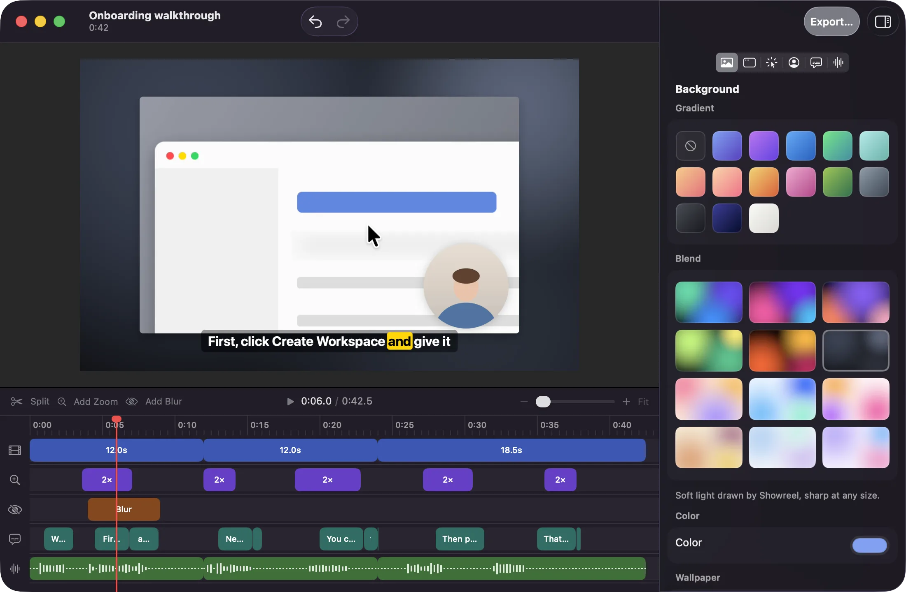
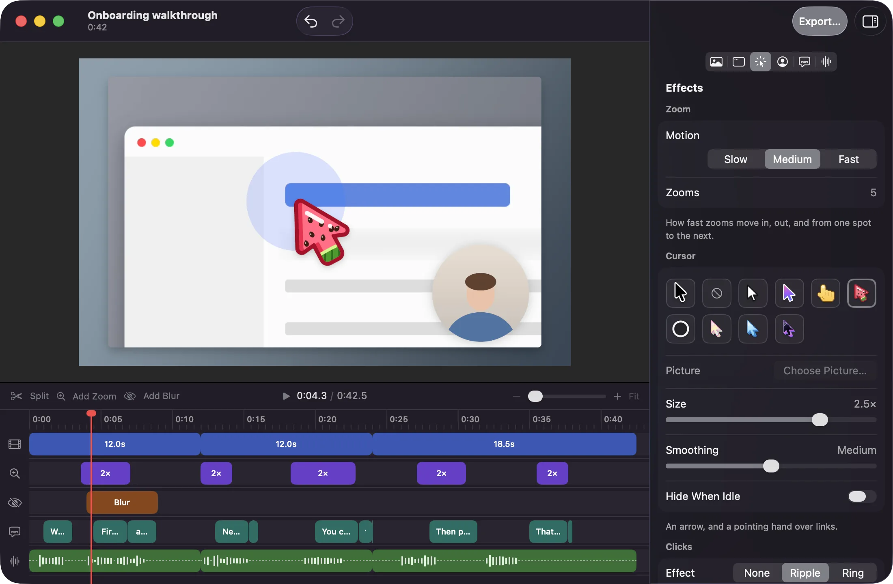
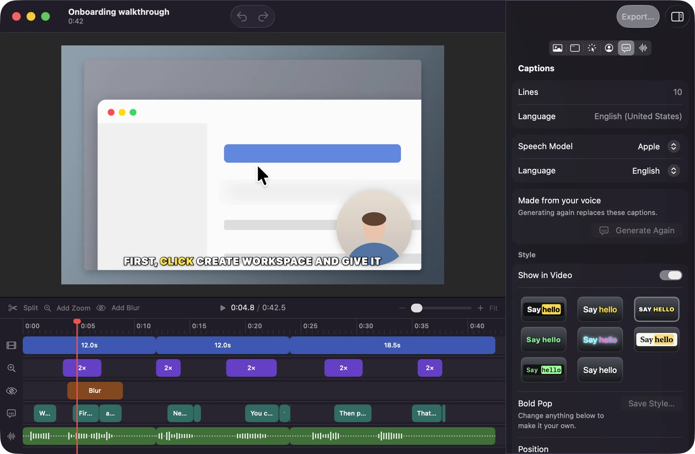
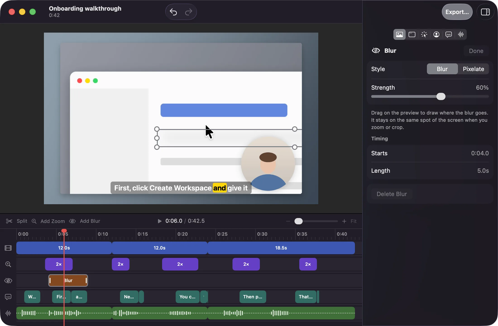
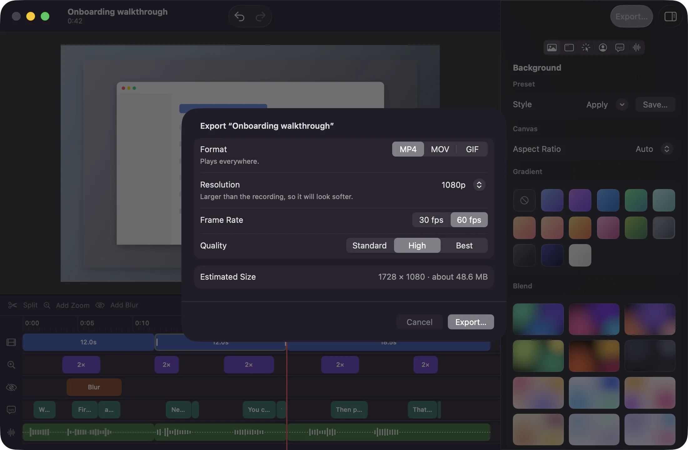
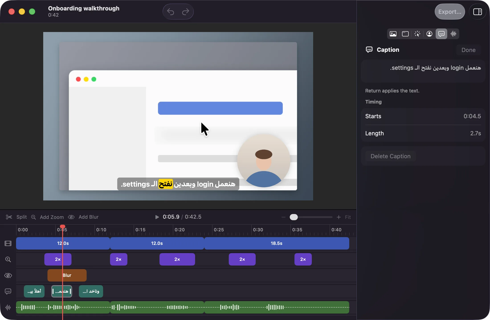
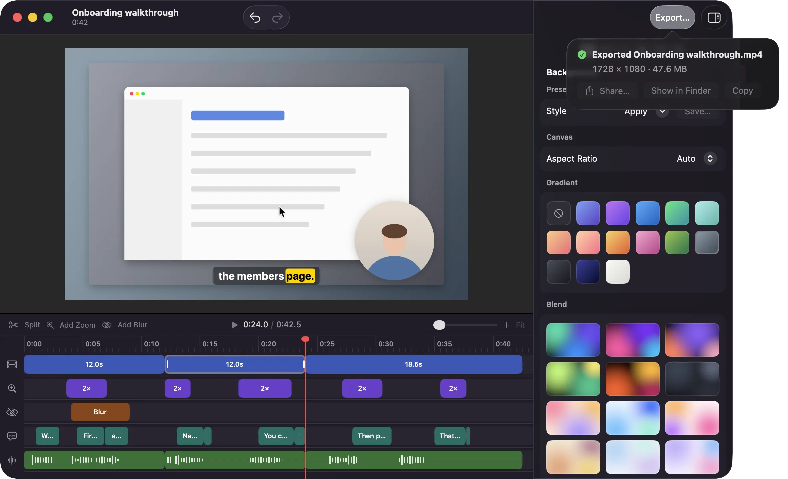

Record your Mac.
Get a polished demo.
Showreel turns a screen recording into a finished product demo.

From raw capture to a finished frame.
Drag the handle, or change a layer and watch the frame follow.
One take, start to finish.
-
Record
Pick a display, a window, or an area. Turn the mic, camera, and system audio on or off, then start from the menu bar or a global shortcut. Your face sits in a round bubble you can drag anywhere while you record.

-
Auto-zoom
Showreel zooms in where you click and eases back out, with no keyframes to set. Every zoom is a block on the timeline that you can move, resize, change, or delete.

-
Style
Choose a gradient, a soft blend, a wallpaper, or your own image. Set padding, rounding, shadow or glow, crop, a Browser or MacBook frame, and the aspect ratio. Save the look as a preset for next time.

-
Cursor
The cursor is redrawn smooth and at any size. Keep the system arrow, hide it, pick a drawn style like Watermelon or Ice, or use your own picture. Clicks show a ripple or a ring.

-
Captions
Generate timed captions from your voice in one click. Edit the words and timing on the caption track, and pick a style that matches your video.

-
Blur
Drag over an email address or an API key to blur or pixelate it. The blur stays on the same spot of the screen when the video zooms or you crop it.

-
Export
Export MP4, MOV, or GIF at 720p, 1080p, or 4K, and 30 or 60 fps, with the file size shown before you start. Then share it with the Share sheet or show it in Finder.

Captions, made on your Mac.
Apple’s built-in speech model, or Whisper Small or Whisper Large v3 Turbo for more languages.
Eight built-in looks: Classic, Clean, Bold Pop, Karaoke, Neon, Paper, Terminal, and Minimal. Change the font, colors, box, outline, shadow, and highlight, then save it as your own.

Arabic and English in one line, shown right to left, in the preview and in the export.
Your recordings stay on this Mac.
- Local files
- Each project is a folder on your Mac, with the screen, camera, mic, and system audio kept as separate tracks.
- On-device speech
- Captions are made on your Mac. Your voice is never uploaded.
- Works offline
- Record, edit, caption, and export without a connection. A Whisper model downloads once, if you want one.
- No account
- No sign-up, no team setup, no cloud upload. Share the file the way you already do.
Specs
| Formats | MP4, MOV, GIF |
|---|---|
| Resolution | 720p, 1080p, 4K |
| Frame rate | 30 or 60 fps (GIF: 15 or 30) |
| Aspect ratio | 16:9, 9:16, 1:1, 4:3, or Auto |
| Recording | Display, window, or area, with mic, camera, and system audio |
| Speech models | Apple, Whisper Small, Whisper Large v3 Turbo |
| Audio | Track volumes, muted sections, and noise reduction |
| Requires | macOS 26 or later |
Questions
Do I need an internet connection?
No. Recording, editing, captions, and export all run on your Mac. The only download is a Whisper speech model, once, if you choose to use one.
Can I change the automatic zooms?
Yes. Each zoom is a block on the zoom track. Drag it to move it, drag its edges to resize it, change how far it zooms and where it focuses, or delete it. You can add your own too.
Do I have to show my face?
No. The camera and mic are optional. Showreel only needs Screen Recording permission to record. You can also hide the camera bubble later in the editor.
Which languages work for captions?
Apple’s built-in model covers several languages, including English. Whisper models add more, including Arabic and mixed Arabic and English, which are shown right to left.
How do I share a video?
Export it, then use the macOS Share sheet or show it in Finder. Showreel doesn’t upload anything or make share links.
Can I hide passwords or keys in a recording?
Yes. Add a blur or pixelate region over them. It stays on that spot of the screen when the video zooms or is cropped.
